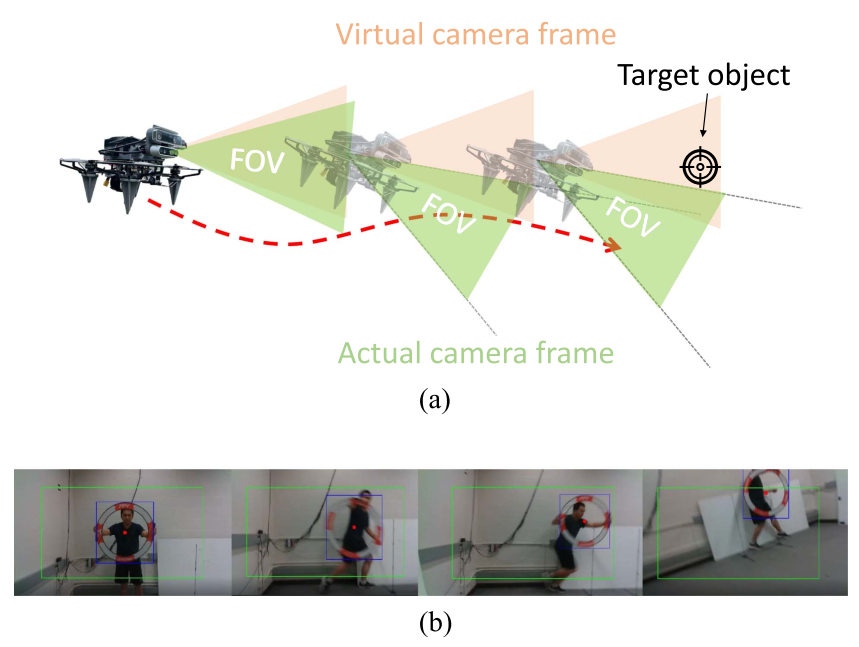
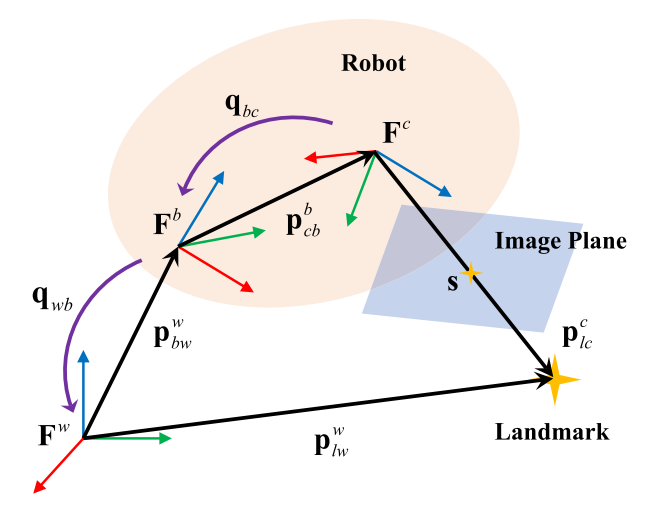
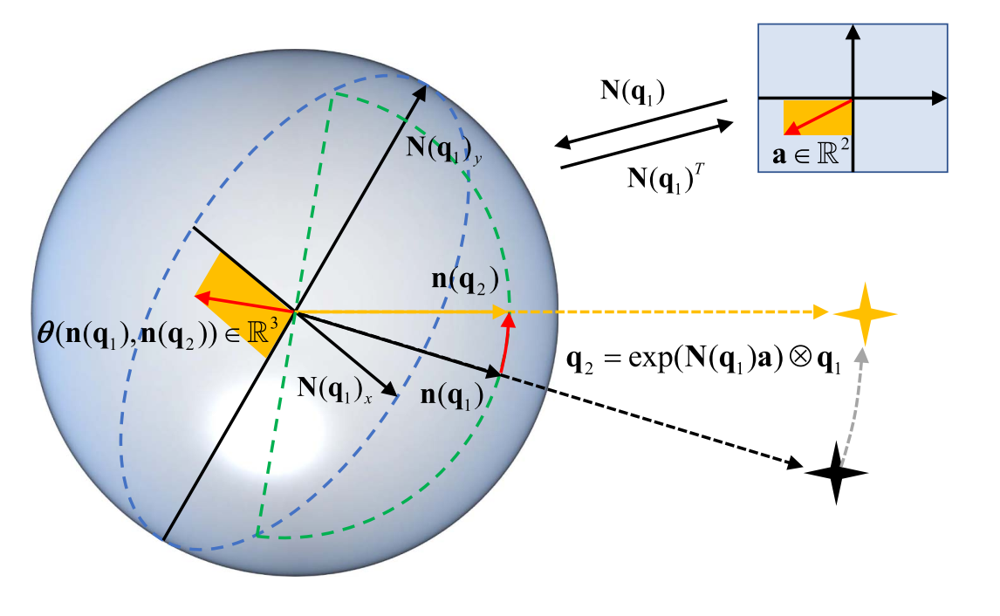
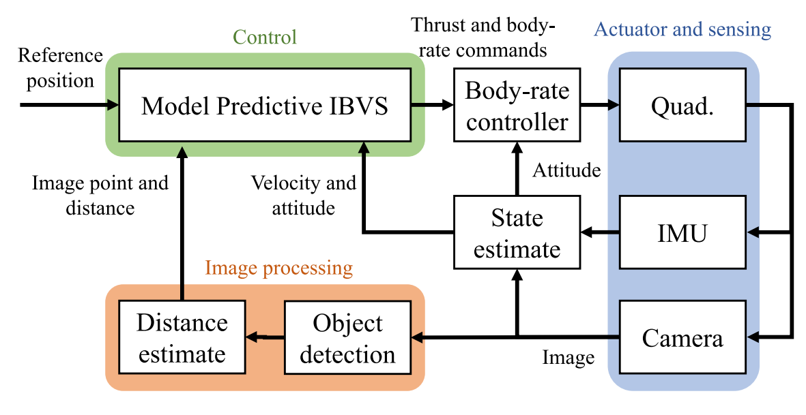
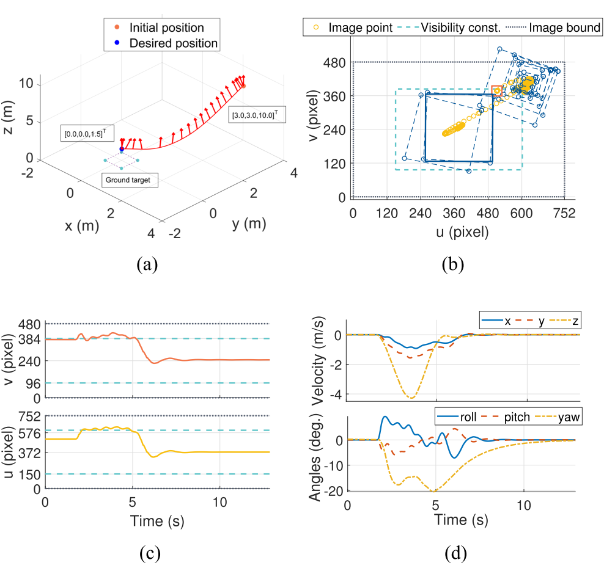
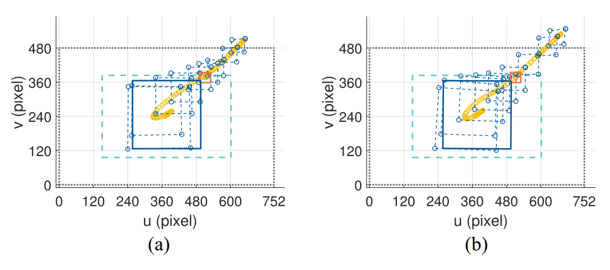
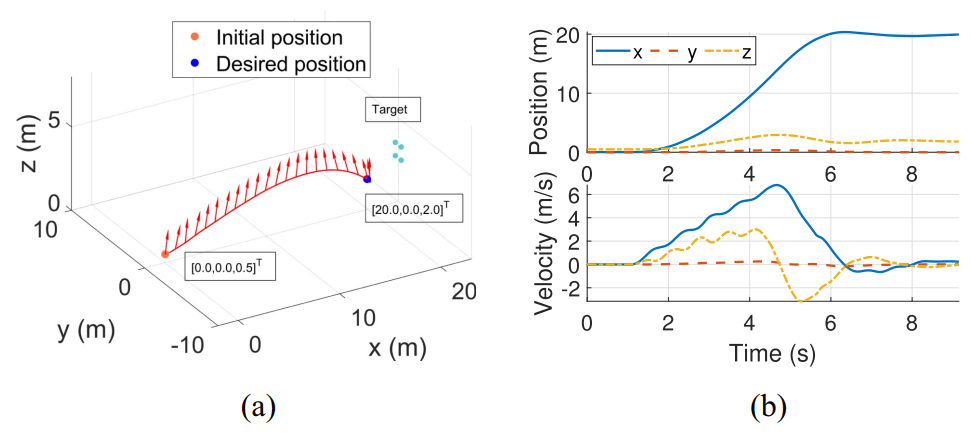
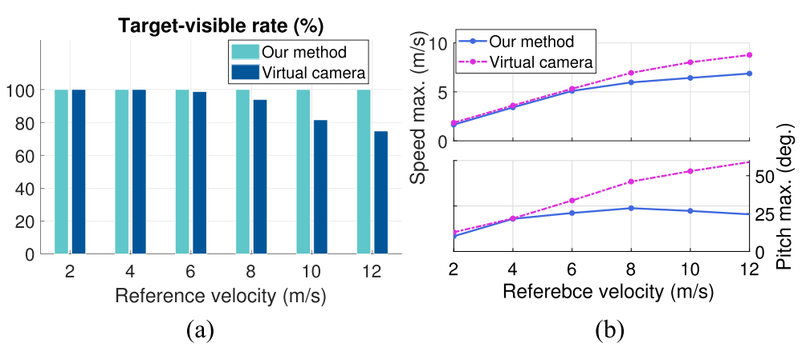
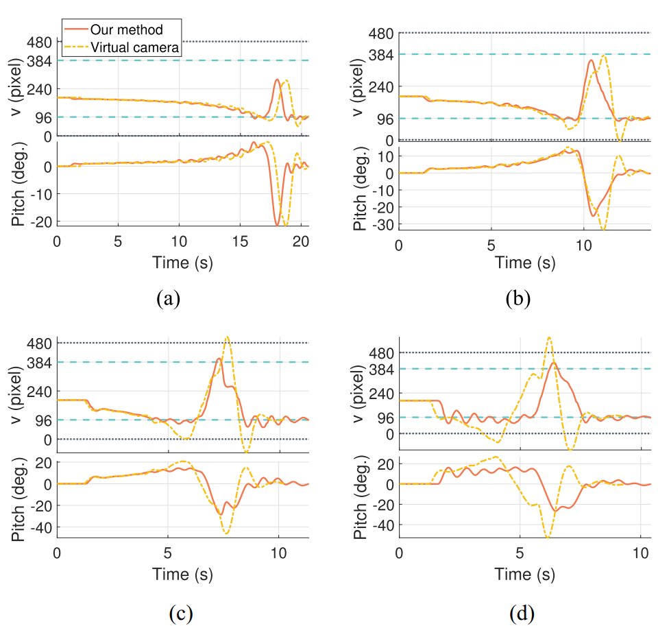
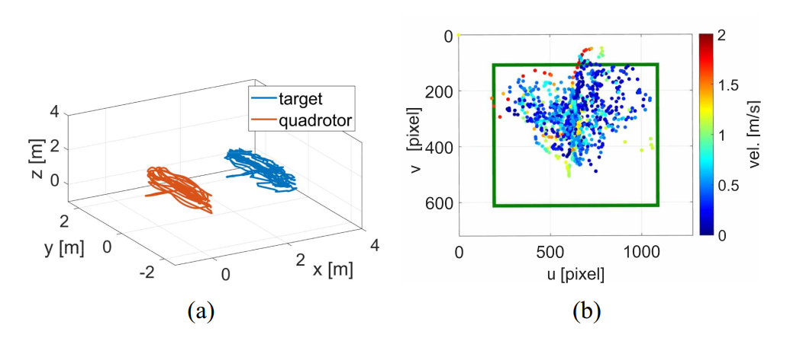

| 标题 | Perception-Aware Image-Based Visual Servoing of Aggressive Quadrotor UAVs（感知感知的图像视觉伺服用于 aggressive 四旋翼无人机） |
| 作者 | Chao Qin（秦超，多伦多大学）、Qiuyu Yu（余秋雨，上海交通大学）、H. S. Helson Go（多伦多大学）、Hugh H.-T. Liu（通讯作者，多伦多大学） |
| 单位 | 多伦多大学（University of Toronto）航空航天研究所（UTIAS），上海交通大学航空航天学院 |
| 发表 | IEEE/ASME Transactions on Mechatronics，2023年8月，Vol. 28，No. 4，pp. 2020–2028 |
| 链接 | 10.1109/TMECH.2023.3276211 | 投稿: 2023-01-06 | 录用: 2023-05-10 | 发表: 2023-05-31 | 代码: GitHub | 视频: YouTube |
| 核心贡献 | 提出一种感知感知的鲁棒 IBVS 方案，解决四旋翼在 aggressive 机动中目标特征容易离开相机视场的核心难题。基于 NMPC 框架，设计了欠驱动补偿机制消除虚拟相机帧需求，从而在真实图像平面定义目标可见性约束；引入四元数球面视觉特征表示处理 2-球面上的非光滑向量场问题。在快速着陆、aggressive 长距离飞行、动态目标跟踪三个任务中实现 100% 目标可见率，最大俯仰 21.04 度、最大速度 6.87 m/s。 |
| 灵感来源 | 所启发的洞察 | 类型 |
|---|---|---|
| 虚拟相机方法的"可见性悖论"（Fig. 1a）——目标在虚拟相机 FOV 内但已离开真实相机 FOV | 虚拟相机方法的根本缺陷不是约束设计问题，而是特征变换丢失了真实相机旋转信息。解决方法是让 NMPC 在真实图像平面预测特征坐标并施加约束——即"先预测再补偿"范式 | 架构 |
| Bloesch et al. (2015) 视觉惯性里程计——用四元数参数化球面上的点以实现光滑 EKF 更新 | 将四元数球面参数化迁移到 IBVS 的特征表示——用四元数 q 表示球面视觉特征，定义 SO(3) 上的 box-plus / box-minus 算子，推导光滑的图像运动学模型，避免 2D 最小表示的奇异性问题，也避免 3D 单位向量的"毛球定理"非光滑问题 | 数学 |
| NMPC 的预测能力——可以在有限时域内前向预测系统状态 | 将视觉特征坐标作为 NMPC 状态变量（连同四旋翼动力学和 range 动力学），在前向预测时间窗内评估每个离散点的可见性约束，使 MPC 能够"预见"特征即将出界并提前调整姿态 | 方法 |
| TTC（预计碰撞时间）在人类感知和机器人栖停中的应用（Zhang et al. 2018） | 将 TTC 约束引入 IBVS——不是简单的距离约束，而是 r / r_dot 的下界约束，既能避免碰撞，又能平滑减速，防止近距离急刹车导致的大幅旋转失稳和视野丢失 | 策略 |
s_min < s(q) < s_max 直接作用于真实像素坐标。动作目标函数中用预测的未来姿态 C(q_wb) 对视觉特征进行旋转补偿，而非预先将特征旋转到虚拟平面。q_dot = N(q)^T * (-n(q)^wedge * v_c / r - omega_c)，雅可比矩阵在整个 S^2 上均光滑。r_dot = -n(q)^T * v_c，每一步都传播更新。引入 TTC 约束 r / r_dot ≥ t_c_min（或 r_dot < 0 时自动满足），既保证碰撞安全，又实现自然平滑减速。一句话：把像素变成四元数球面特征，再把“真实图像平面上的可见性”写成 NMPC 的硬约束，直接解出推力与角速率。两图中紫色 = 本文创新：球面特征表示（②）、欠驱动补偿与真实视野约束（①）、距离状态与 TTC 约束（③）；橙色 = 机载传感，绿色 = 执行。
flowchart LR
subgraph IN["机载感知"]
CAM["针孔相机
Pinhole Cam"]
ODO["T265 里程计
Odometry"]
end
subgraph PER["视觉特征（本文创新②）"]
DET["门框检测
YOLOv5"]
SPH["球面特征
Spherical"]
end
subgraph MPC["NMPC 控制（本文创新①③）"]
OCP["全状态模型
Full Model"]
CON["约束评估
Constraints"]
end
subgraph EXE["执行"]
FC["飞控执行
PixRacer"]
end
CAM -->|"图像 30 Hz"| DET
DET -->|"边框"| SPH
DET -->|"距离 r"| OCP
SPH -->|"四元数"| OCP
ODO -->|"位姿"| OCP
OCP -->|"预测特征"| CON
CON -->|"控制量 u"| FC
classDef sensor fill:#fef7ed,stroke:#f59e0b,stroke-width:2px,color:#92400e
classDef novel fill:#f0ebfd,stroke:#8b5cf6,stroke-width:3px,color:#6d28d9
classDef exec fill:#e6f7ee,stroke:#10b981,stroke-width:2px,color:#047857
class CAM,ODO,DET sensor
class SPH,OCP,CON novel
class FC exec
约束写在真实图像平面（π(q) 落在 s_min 与 s_max 之间），而不是虚拟相机平面——这是与所有虚拟相机类方法的分水岭；距离 r 作为状态逐步传播，预测的特征轨迹才可信。控制量直达角速率环，省掉级联姿态环带来的响应滞后。
flowchart LR IMG["相机图像
Image"] DET["门框检测
YOLOv5"] FEAT["球面特征
Spherical"] PRED["特征预测
Prediction"] VIS["视野判定
Visibility"] MPC["NMPC 求解
Solver"] UAV["四旋翼
Quadrotor"] IMG -->|"30 Hz"| DET DET -->|"框中心"| FEAT FEAT -->|"四元数"| PRED PRED -->|"预测图像坐标"| VIS VIS -->|"越界则约束"| MPC MPC -->|"推力 c, 角速率 ω"| UAV UAV -.->|"下一帧图像"| IMG UAV -.->|"T265 位姿"| PRED classDef sensor fill:#fef7ed,stroke:#f59e0b,stroke-width:2px,color:#92400e classDef novel fill:#f0ebfd,stroke:#8b5cf6,stroke-width:3px,color:#6d28d9 classDef exec fill:#e6f7ee,stroke:#10b981,stroke-width:2px,color:#047857 class IMG,DET sensor class FEAT,PRED,VIS,MPC novel class UAV exec
预测 → 判定 → 约束激活 → 重解：一旦预测的特征轨迹逼近图像边界，NMPC 就牺牲一点机动性、用姿态把特征拉回指定区域，这就是 TVR 能做到 100% 的机制。虚线是 30 Hz 的视觉回路与 T265 状态反馈，全程不需要额外传感器。
| 类别 | 内容 | 维度 |
|---|---|---|
| 输入 | 相机图像（30 Hz）、四旋翼速度与姿态估计（T265）、目标检测结果（YOLOv5 边界框） | 图像 1280x640 px（实验）/ 752x480 px（仿真） |
| 输出 | 质量归一化推力 c 和机体角速率 Omega_b，发送至 PixRacer 飞控进行角速率跟踪 | 1D 推力 + 3D 角速率 = 4D 控制输入 |
| 目标 | 在 aggressive 机动中保持 100% 目标可见率（TVR），同时完成伺服任务（着陆、飞行、跟踪） | 最大速度 6.87 m/s、最大俯仰 21.04 度下 TVR = 100% |
这是一个控制算法创新——不是新硬件或新传感器，而是在 NMPC 框架内重新设计了 IBVS 的视觉特征表示、运动学模型和约束定义方式。三个典型任务：(1) 快速着陆——从 [3, 3, 10] m 以 4.63 m/s 最大速度降落到 [0, 0, 1.5] m，下视相机；(2) Aggressive 长距离飞行——20 m 水平飞行，前视相机，最大俯仰 21.04 度，验证可见性约束如何主动限制姿态以保护视野；(3) 动态目标跟踪——真人手持赛门在 5x4.3x3 m 室内空间中移动，四旋翼跟随，速度 1.92 m/s，滚转 14.93 度。
表头使用英文，正文使用中文
| Prior Method | Core Idea | Why It Fails |
|---|---|---|
| Virtual Camera IBVS（虚拟相机 IBVS） Zhang 2021, Zheng 2019, Heshmati-alamdari 2014 |
将检测到的视觉特征旋转到虚拟水平图像平面，获得旋转不变的图像运动学，然后在此虚拟平面设计 IBVS 控制器和可见性约束 | 特征变换到虚拟相机帧后丢失了真实相机旋转信息。即使虚拟相机 FOV 内定义了可见性约束，该约束也无法反映真实相机 FOV 中的目标位置。Fig. 1a 展示：目标在虚拟 FOV 内始终可见，但在真实相机中已出界。这是所有虚拟相机方法的结构性缺陷——不是参数调节问题，是框架本身的问题。 |
| Rotation-Invariant Feature Methods（旋转不变特征方法） Guo & Leang 2020, Fomena 2011, Tahri 2013 |
设计具有旋转不变图像运动学的特殊视觉特征（如球面三点距离、不变矩），使得特征本身不受相机旋转影响 | 不变特征虽然消除了旋转依赖，但难以表达可见性目标和约束——因为不变特征通常不是直观的像素坐标。所有此类方法都将目标可见性当作给定条件，没有显式处理视野约束。在 aggressive 机动中，目标仍可能离开 FOV。 |
| Cascaded Control IBVS（级联控制 IBVS） Zheng 2018, Sheng 2019, Mebarki 2015 |
外环 IBVS 产生速度/加速度指令，内环姿态控制器跟踪——标准的级联控制架构 | 内环姿态控制器的动态增加了响应延迟——外环计算的指令经过内环动态后才作用到机体。当目标快速移向图像边缘时，这种延迟可能导致四旋翼来不及响应。aggressive 机动中，特征可能已经出界而控制器仍在处理上一帧的指令。 |
| Fixed-Depth IBVS（固定深度 IBVS） Zhang 2021, Mcfadyen 2013 |
将目标深度设为固定值，简化图像运动学，减少状态维度 | 深度固定意味着特征预测不准确。aggressive 着陆中深度从 10 m 变化到 1.5 m，固定深度会导致预测位置偏离真实值，可见性评估失准——可能"以为"特征在安全区内但实际已出界。 |
本文的核心方法是一个基于 NMPC 的 IBVS 控制方案，包含三个关键创新：(1) 四元数球面视觉特征的运动学推导；(2) 欠驱动补偿机制——在真实图像平面施加可见性约束，在目标函数中用预测姿态做旋转补偿；(3) 动态 range 状态与 TTC 约束。
| 参数 | 取值 | 含义 | 为什么取这个值 |
|---|---|---|---|
| NMPC 预测时域 | 1.0 s | 前向预测的时间窗口长度 | 足够长以"预见"特征即将出界并提前调整姿态；足够短以保证实时性（5-10 ms 求解） |
| 离散化时间步长 | 0.05 s（20 个节点） | 预测时域内的离散采样间隔 | 每个节点都评估可见性约束。20 个节点在精度和计算量间平衡 |
| NMPC 求解器 | ACADO + qpOASES | 代码生成 + 实时迭代 QP 求解 | ACADO 的 RTI 方案将非线性 OCP 转为序列 QP，qpOASES 高效求解——平均 5-10 ms |
| 最大推力 / 角速率 | 20 N / 3.0 rad/s | Hummingbird 四旋翼的执行器限制 | 仿真中 qpOASES 的 QP 类型——保证全局最优 |
| 目标检测器 | YOLOv5 | 深度学习目标检测器，输出赛门边界框 | 实时性（30 Hz）+ 高精度，满足 aggressive 飞行的感知需求 |
| 可见性约束区域 | 451x288 px（仿真）/ 绿色框（实验） | 视觉特征必须保持在此图像区域内 | 小于完整图像尺寸（752x480），留出安全裕度——一旦特征接近边界，NMPC 主动限制姿态 |
理解本文需要掌握三个关键基础原理：(1) 球面视觉特征的流形表示——为什么四元数能解决 S^2 上的光滑性问题；(2) 欠驱动系统 IBVS 的旋转-平移耦合——为什么"先预测再补偿"比"先补偿再预测"更优；(3) NMPC 中可见性约束的实时执行——RTI 方案如何实现 5-10 ms 求解。
为什么选择 2D 切空间增量而非 3D 更新？四元数有 4 个分量但 $SO(3)$ 只有 3 个自由度，球面特征点 $S^2$ 只有 2 个自由度。本文在切空间 $\mathbb{R}^2$ 中做增量（而非 $\mathbb{R}^3$），恰好匹配 2 自由度，避免过参数化的冗余约束问题。$\mathbf{N}(\mathbf{q})$ 矩阵将 $\mathbb{R}^2$ 映射到 $\mathbb{R}^3$ 切空间，再通过 $\exp$ 映射到 $SO(3)$。
工程直觉：虚拟相机方法就像"闭上眼睛做手术"——你把看到的图像旋转到一个舒服的角度，然后在这个幻想的视角下做控制，但忘记了真实的眼睛仍然在原位。本文方法则"睁着眼睛做手术"——你始终知道目标在视野中的真实位置，只是在评估"我需要怎么移动才能对准目标"时才考虑姿态的影响。
论文原图截图。图片保存至 figures/ 子目录。命名 fig1.png ~ fig8.png 即可自动显示。

请将截图保存为figures/fig1.png本图展示了整篇论文的核心动机。(a) 虚拟相机方法的根本问题：四旋翼前向俯仰后，目标在虚拟相机 FOV（粉色锥体）内仍然可见，但在真实相机 FOV（绿色锥体）中已经丢失——因为虚拟相机将特征旋转到水平面，丢失了俯仰信息。可见性约束（粉色锥体边界）因此形同虚设——目标在真实世界中已不可见，而约束仍未激活。(b) 本文方法的实验结果：aggressive 飞行穿越赛门时，视觉特征（门中心点）始终保持在指定图像区域（绿色矩形）内，证明了真实可见性约束的有效性。

请将截图保存为figures/fig2.png本图定义了全文的坐标系统。三个坐标系：世界系 $\mathcal{F}_w$、机体系 $\mathcal{F}_b$、相机系 $\mathcal{F}_c$。世界坐标系中标定点 $\mathbf{p}_{lw}^w$ 通过相机投影映射到图像坐标 $\mathbf{s}$。相机到机体的外参为 $(\mathbf{p}_{bc}^b, \mathbf{q}_{bc})$——即相机在机体中的安装位置和方向。

请将截图保存为figures/fig3.png本图展示了本文最关键的数学创新——四元数球面特征表示。3D 单位向量 $\boldsymbol{\mu}_1$（指向 landmark）被等价表示为四元数 $\mathbf{q}_1$（即 $\mathbf{n}(\mathbf{q}_1) = \boldsymbol{\mu}_1$）。矩阵 $\mathbf{N}(\mathbf{q}_1) = [\mathbf{N}(\mathbf{q}_1)_x, \mathbf{N}(\mathbf{q}_1)_y]$ 的列张成该点的切空间——使得 $\boxplus$ 和 $\boxminus$ 算子可以唯一定义。

请将截图保存为figures/fig4.png本图展示了完整的控制架构——从图像采集到目标检测（YOLOv5）、球面特征提取（s → q）、NMPC 优化求解（ACADO + qpOASES），再到低层角速率控制（PixRacer PID）和电机输出。关键架构特点：NMPC 直接输出推力和机体角速率，绕过了传统级联结构中的姿态控制器——这是实现高响应速度的前提。

请将截图保存为figures/fig5.png本图验证了可见性约束在快速着陆场景中的有效性。(a) 四旋翼以最大 4.63 m/s 的速度从 [3, 3, 10] m 成功降落到 [0, 0, 1.5] m。(b) 视觉特征从初始位置 [511, 377] px 移动到图像右上角（可见性约束边界），然后回到中心。(c) 可见性约束在 1.84-5.1 s 间活跃——此时速度和大角度旋转同时发生。(d) 最大滚转 9.30 度、俯仰 5.88 度、偏航 20.53 度。

请将截图保存为figures/fig6.png本图对比了三种情况下的视觉特征轨迹。(a) 本文方法但无可见性约束——特征直接移出图像边界，任务失败。(b) 虚拟相机方法的可见性约束——特征同样离开图像边界，因为约束定义在虚拟相机帧而非真实图像平面。这证明了两个关键结论：(1) 可见性约束是必要的；(2) 但仅仅是"有约束"不够——约束必须定义在正确的空间（真实图像平面）。

请将截图保存为figures/fig7.png本图展示了 20 m aggressive 长距离飞行的完整结果。参考速度 10 m/s 下，四旋翼以最大速度 6.87 m/s 到达目标位置，TVR 保持 100%。最大俯仰 21.04 度——在此姿态下前视相机大幅倾斜，但可见性约束有效限制了进一步俯仰以保护视野。

请将截图保存为figures/fig8.png本图是整篇论文最关键的定量对比结果。(a) 不同参考速度下的 TVR：本文方法在 4-12 m/s 的所有参考速度下均保持 100% TVR；虚拟相机方法的 TVR 从 8 m/s 起开始下降，12 m/s 时降至 74%。(b) 最大实际速度和最大俯仰角随参考速度的变化——本文方法在参考速度约 6 m/s 后开始主动限制四旋翼的 aggressiveness（速度不再随参考速度增大而增大，俯仰角被约束在约 21 度），而虚拟相机方法允许更大的旋转但以丢失目标为代价。

请将截图保存为figures/fig9.png本图揭示了可见性约束如何随 aggressiveness 增加而逐步激活。从 4 m/s 递增到 10 m/s 参考速度，展示了垂直图像坐标 v 和俯仰角的轨迹。(a) 4 m/s 时两者几乎相同——约束未激活。(b) 6 m/s 时虚拟相机方法开始有特征出界（持续 0.1318 s）。(c)-(d) 8-10 m/s 时，本文方法产生围绕约束边界的振荡轨迹，俯仰角也相应振荡——这是约束激活后的典型行为。虚拟相机方法的俯仰角更大但特征已出界。

请将截图保存为figures/fig11.png本图展示了真实硬件实验中的动态目标跟踪结果。(a) 四旋翼与目标（手持赛门）在 5x4.3x3 m 室内空间中的 3D 轨迹——跟踪成功且稳定。(b) 视觉特征在图像平面中的轨迹——颜色编码表示四旋翼速度。最大速度 1.92 m/s，最大滚转 14.93 度——在这些 aggressive 机动下，视觉特征始终保持在指定图像区域（绿色矩形）内，TVR = 100%。
| 数据问题 | 潜在困难 | 严重程度 |
|---|---|---|
| 目标检测失败（运动模糊 / 遮挡） | range 估计直接依赖边界框尺寸——检测失败意味着整个 IBVS 环路中断。在 aggressive 机动中，运动模糊尤其严重。可能的缓解：多特征冗余、特征预测在短时间遮挡内继续传播状态 | ★★★★★ |
| Range 估计误差 | $r = f_{cam} \cdot d_{gate} / \max(w_{box}, h_{box})$ 对方程假设（门直径已知、边界框紧贴、相机模型准确）非常敏感。range 不准 → 特征运动学预测不准 → 可见性约束失准 → 可能"以为"特征在安全区但实际已出界 | ★★★★ |
| 速度估计漂移（无 GPS / 弱光） | T265 在弱纹理或高速运动时精度下降。速度是 NMPC 状态的核心分量——速度误估导致整个预测失准。但相比纯视觉方案，T265 已经提供了较好的短期精度 | ★★★ |
| NMPC 权重调谐敏感 | $Q_s$（感知权重）vs $Q_p$（位置权重）的平衡直接决定 aggressiveness vs. safety。在一个场景中调好的权重可能在另一个场景中过于保守或过于激进。自适应权重是必要的后续工作 | ★★★ |
| 参考文献 | 为什么重要 |
|---|---|
| Zhang et al. (2021) — Robust nonlinear model predictive control based visual servoing of quadrotor UAVs. IEEE/ASME Trans. Mechatronics 26(2), 700-708 | 本文方法的直接对比基准——同样使用 NMPC + IBVS + 可见性约束，但基于虚拟相机框架。本文证明了其可见性约束在 aggressive 机动中无法保证真实目标可见性（TVR 降至 74%），而这正是本文的核心贡献所在。 |
| Bloesch et al. (2015) — Robust visual inertial odometry using a direct EKF-based approach. IEEE/RSJ IROS, 298-304 | 四元数球面特征表示的灵感来源——Bloesch 用四元数参数化球面特征以实现光滑的 EKF 更新，本文将此思想迁移到 IBVS 的特征运动学推导中，解决了球面表示的核心数学障碍。 |
| Falanga et al. (2018) — PAMPC: Perception-aware model predictive control for quadrotors. IEEE/RSJ IROS, 1-8 | "Perception-aware" 这一术语的来源——Falanga 在 NMPC 框架中将视觉特征可观测性作为目标函数的一部分，但未处理可见性约束。本文在此基础上进一步：将可见性作为硬约束而非软目标，提供了更强保证。 |
| Hamel & Mahony (2002) — Visual servoing of an under-actuated dynamic rigid-body system: An image-based approach. IEEE Trans. Robot. Autom. 18(2), 187-198 | 球面 IBVS 的理论基础——首次证明球面图像特征对于欠驱动系统（如四旋翼）具有良好的几何特性。本文的四元数球面特征是对 Hamel 的 3D 单位向量表示的改进——解决了光滑性问题。 |
| Houska et al. (2011) — ACADO toolkit. Optimal Control Appl. Methods 32(3), 298-312 | ACADO 工具包的原始论文——本文的 NMPC 实现基于 ACADO 代码生成 + qpOASES 求解。理解 ACADO 的 RTI 方案和代码生成机制是复现本文方法的前提。 |
对象：论文 §II（Spherical Image Kinematics）与 §III（Model-Predictive Visual Servo Control）的全部 25 个编号公式（式 (1)–(25)）以及正文中无编号但方法核心的式子（球面反投影 $\rho=K^{-1}s/\|K^{-1}s\|_2$、旋转补偿位置 $P(x)$、针孔投影 $\pi(q)$、TTC $t_c$ 与安全域 $\mathcal T_c$、实验中的 range 估计式）。验证方法：
FSC-Lab/fsc_aggressive_ibvs（本文写作时抓取 main 分支）逐行交叉验证——包括 ACADO 生成的 ODE 代码 acado_integrator.c、参考/约束代码 acado_solver.c、特征构造 normal_vector.cpp 与参数文件 rotors_control_params.yaml；verify_eqs.py（可复跑）验证全部符号约定、矩阵恒等式与端到端积分一致性；诚实声明（重要）：本次会话所用模型不能读取页面图像（read_image 报“模型不支持图像输入”），公式原文无法按页面逐字符核对。本节所引原文基于 fulltext.txt 的文本抽取，并通过“数学自洽性 + 开源代码 + 数值验证”三方交叉确认；凡依赖文本抽取顺序的结论（特别是式 (2)、(8)、(19) 中乘法/参数顺序），均已在正文标注「⚠️ 请对照 PDF 第 3、5 页图像最终核实」。
| 公式 | 内容 | 推导与代码对照结论 |
|---|---|---|
| (1) | 最小旋转向量 $\theta(\rho_1,\rho_2)$ | ✅ 语义为“把 $\rho_1$ 转到 $\rho_2$”（轴沿 $\rho_1\times\rho_2$）；$\lvert\arccos\rvert$ 冗余；$\rho_1=\pm\rho_2$ 处奇异 |
| (2) | 旋转向量→四元数特征 | ⚠️ 按打印顺序 $\alpha=\theta(\rho,e_z)$ 与“$\rho=C(q)e_z$”矛盾（$C(q)e_z=2\rho_z e_z-\rho$）；自洽形式为 $\alpha=\theta(e_z,\rho)$，代码 getAngleAxisFromTwoNormals(e_z, vec) 正是自洽形式 |
| (3)(4) | $n(q)=C(q)e_z$、$N(q)=[C(q)e_x,C(q)e_y]$ | ✅ 正确；$N(q)$ 列正交且张成 $T_{n(q)}S^2$（已数值验证） |
| (5)–(8) | $\boxplus$/$\boxminus$ 算子 | ⚠️ 按打印顺序 $\theta(n(q_1),n(q_2))$，(8) 与 (6) 不互逆（$q_2\boxplus(q_1\boxminus q_2)$ 给出 $2\cos\theta\,n_2-n_1$）；改为 $\theta(n(q_2),n(q_1))$ 后精确互逆（数值验证） |
| (9)–(11) | 静止路标约束求导、$\dot C=\omega^\times C$ | ✅ 正确；$\dot C(q_{wc})=(\omega_{cw}^w)^\times C(q_{wc})$ 是标准结果 |
| (12) | $\partial n/\partial q=-n(q)^\times N(q)$ | ✅ 正确（$\boxplus$ 小扰动 + 有限差分双重验证） |
| (13) | 相机系下的几何约束 | ✅ 正确；用了恒等式 $(C(q_{wc})n)^\times=C(q_{wc})n^\times C(q_{wc})^T$ |
| (14) | 特征切坐标运动学 $\dot q$ | ✅ 正确。关键细节：切坐标导数必须经 $N^T n^\times$ 投影而非 $N^T$（两者差 90° 旋转）；已端到端积分验证（4 s 内方向误差 <10⁻⁴） |
| (15) | range 运动学 $\dot r=-n^T v_c$ | ✅ 正确；与 $\dot r=n^T\dot p_c$ 的物理推导一致 |
| (16) | 连续时间 OCP | ✅ 结构正确（无终端代价的 Lagrange 形式）；代码离散为 20 节点 RK2 多重打靶 |
| (17)(18) | 状态 12 维 / 控制 4 维 | ⚠️ 论文为理想化表述；开源代码实际为 18 维状态（多绝对位置 3 + 推力状态 1 + 松弛状态 2）与 6 维控制（推力率 + 体角速率 3 + 松弛 2） |
| (19) | 四旋翼动力学 + 四元数姿态运动学 | ⚠️ 第一式正确；第二式按打印顺序 $\dot q_{wb}=\tfrac12[0;\omega^b]\otimes q_{wb}$ 在 Hamilton 约定下给出 $\dot R=R[\omega^w]^\times$（把机体角速率当成世界系角速率）；正确形式为 $\dot q_{wb}=\tfrac12 q_{wb}\otimes[0;\omega^b]$，代码实现正是正确的右乘形式 |
| (20) | 特征运动学的 $w/b$ 系表达 | ✅ 坐标变换正确（含杠杆臂 $\omega^b\times p_{cb}^b$）。⚠️ 代码 ODE 未含杠杆臂项（$t_{B,C}$ 载入在线数据但 rhs 不引用；杠杆臂出现在参考代价中）；且代码用环境嵌入 $\dot q=(0,\tfrac12N(q)\dot q_2)$ 代替 $\boxplus$ 一致嵌入 $\tfrac12[0;N(q)\dot q_2]\otimes q$（绕光轴精确、离轴一阶误差） |
| (21) | 动作目标 $L_a$（含旋转补偿 $P(x)$） | ✅ 正确；状态不含绝对位置，故位置误差必为 robocentric 形式——这是“欠驱动补偿”的数学实质；代码在机体系中评估同一误差（含杠杆臂） |
| (22) | 感知目标 $L_p$ | ✅ 正确（针孔投影）；代码前视相机取 $Q_{img,v}=0$，与论文“垂直轴零权重避免惩罚俯仰”完全一致 |
| (23)(24)(25) | 执行器 / 可见性 / TTC 约束 | ✅ 正确；已证明 $(\dot r/r\le 1/t_c^{\min})\iff t_c\in\mathcal T_c$（$r>0$）；代码以带松弛变量的软约束实现（5 条路径约束） |
| 数值核算 | 焦距、边界、俯仰等 | ✅ 代码 image_u_bound=0.58 / image_v_bound=0.37 与论文 451×288 / 752×480 约束框一致 ⟺ 焦距 $f\approx 389$ px；最大俯仰 21.04° ≈ atan(0.37)+0.74° 与“约束触顶时俯仰被钉在边界”自洽 |
| 符号 | 含义 | 维度/单位 | 文中取值（实验/代码） |
|---|---|---|---|
| $s=(u,v,1)^T$ | 特征像素齐次坐标 | px | 仿真图像 752×480；实验 1280×640 |
| $K\in\mathbb R^{3\times3}$ | 相机内参矩阵 | — | 论文未给数值；由代码边界反推 $f\approx389$ px（仿真） |
| $\rho\in S^2$ | 特征方向的 3-D 单位向量 | 无 | $\rho=K^{-1}s/\|K^{-1}s\|_2$ |
| $q\in\mathbb R^4$ | 球面特征的四元数表示（单位四元数，标量在前 $[w;x,y,z]$） | 无 | $\rho=C(q)e_z$ |
| $q_{wb}$ | 四旋翼姿态四元数（$F_b\to F_w$） | 无 | — |
| $q_{wc},q_{bc}$ | 世界/机体到相机系的姿态 | 无 | $q_{bc}=[0.5,-0.5,0.5,-0.5]$（前视相机，代码） |
| $C(q)\in\mathbb R^{3\times3}$ | 四元数对应的旋转矩阵（主动旋转：$v'=C(q)v$） | — | Hamilton 约定（标量在前） |
| $\otimes$ | Hamilton 四元数乘法 | — | $C(q_1\otimes q_2)=C(q_1)C(q_2)$ |
| $(\cdot)^\times$ | 向量的斜对称矩阵 | — | $a^\times b=a\times b$ |
| $n(q),N(q)$ | $C(q)e_z$；$[C(q)e_x,C(q)e_y]\in\mathbb R^{3\times2}$ | — | 式 (3)(4) |
| $r$ | range：相机原点到路标的距离（状态变量） | m | 实验期望 2.0 m |
| $v^w,v_c$ | 四旋翼速度（世界系 / 相机系表达） | m/s | 实验最大 1.92 m/s；仿真最大 6.87 m/s |
| $\omega^b,\omega_c$ | 体角速率 / 相机角速度（机体系 / 相机系表达） | rad/s | 上限 3.0 rad/s（仿真） |
| $c$ | 质量归一化推力（标量），$\mathbf c=(0,0,c)^T$ | m/s² | 最大推力 20 N（悬停 9.81） |
| $t_c,t_c^{\min}$ | TTC（碰撞时间）与安全阈值 | s | $t_c^{\min}$ 论文未给数值 |
| $(s_{\min},s_{\max})$ | 可见性约束图像区域 | px | 451×288（仿真）；代码归一化 0.58 / 0.37 |
| $d_{gate},w_{box},h_{box},f_{cam}$ | 门直径、检测框宽/高、焦距（实验 range 估计） | m / px / px | $d_{gate}=0.75$ m |
约定声明：本文全部推导采用主动旋转约定：$C(q)$ 是标准 Hamilton 旋转矩阵（$q$ 标量在前），满足 $C(q_1\otimes q_2)=C(q_1)C(q_2)$。这是论文式 (12) 推导文字（$C(\exp(\varphi))\approx I+\varphi^\times$）与开源代码共同要求的约定（代码 out[7..9]=R(q_{wb})\cdot(0,0,c)+g^w 已验证为标准 Hamilton 矩阵）。在此约定下，第 2 节将证明论文式 (2)、(8) 的打印顺序与其余公式不自洽，并给出与代码一致的自洽形式。
论文原文：
设 $\theta=\arccos(\rho_1^T\rho_2)\in[0,\pi]$ 为两单位向量夹角，$u=(\rho_1\times\rho_2)/\sin\theta$ 为单位旋转轴。用 Rodrigues 公式 $\exp(\theta u^\times)=I+\sin\theta\,u^\times+(1-\cos\theta)uu^T$ 计算：
$$u^\times\rho_1=\frac{(\rho_1\times\rho_2)\times\rho_1}{\sin\theta} =\frac{(\rho_1\cdot\rho_1)\rho_2-(\rho_2\cdot\rho_1)\rho_1}{\sin\theta} =\frac{\rho_2-\cos\theta\,\rho_1}{\sin\theta}$$
（第一行用了矢量三重积 $(a\times b)\times c=(a\cdot c)b-(b\cdot c)a$。）于是：
$$\exp\big(\theta(\rho_1,\rho_2)^\times\big)\rho_1 =\cos\theta\,\rho_1+\sin\theta\cdot\frac{\rho_2-\cos\theta\,\rho_1}{\sin\theta}+0=\rho_2$$
结论：$\theta(\rho_1,\rho_2)$ 是把 $\rho_1$ 旋转到 $\rho_2$ 的最小旋转向量（$u\cdot\rho_1=0$ 使 Rodrigues 第三项为零）。反过来，把 $\rho_2$ 代进去则得到另一个量：
$$\exp\big(\theta(\rho_1,\rho_2)^\times\big)\rho_2=2\cos\theta\,\rho_2-\rho_1 \qquad(\text{一般不等于 }\rho_1)$$
即 $\theta(\rho_1,\rho_2)$ 不把 $\rho_2$ 转到 $\rho_1$。这个“参数顺序敏感”的事实是后面第 3、5 节判断式 (2)、(8) 是否自洽的关键（数值验证：verify_eqs.py §B 两条均 PASS）。
论文原文（§II-B）：
针孔模型：像素齐次坐标 $s=(u,v,1)^T$ 与相机系 3-D 射线方向的关系为 $s=K\,\tilde p$（差一个尺度），其中 $\tilde p$ 是射线上任意点的齐次坐标。取 $\tilde p=K^{-1}s$ 再单位化即得单位方向向量：
$$s=K\,(\lambda\rho),\quad\lambda>0 \;\Longrightarrow\; \rho=\frac{K^{-1}s}{\lVert K^{-1}s\rVert_2}$$
这一步要求特征在相机前方（$\lambda>0$），即针孔模型的前视假设。
对任意旋转向量 $\alpha=\theta u$（$\theta=\lVert\alpha\rVert$），对应的四元数与旋转矩阵为：
$$q(\alpha)=\begin{bmatrix}\cos\frac\theta2\\ u\sin\frac\theta2\end{bmatrix}, \qquad C\big(q(\alpha)\big)=\exp(\alpha^\times)\quad(\text{Rodrigues})$$
这是标准对应（标量在前、主动旋转）。代入 $\alpha=\theta(e_z,\rho)$（把 $e_z$ 转到 $\rho$ 的旋转向量）：
$$C(q)e_z=\exp\big(\theta(e_z,\rho)^\times\big)e_z=\rho\qquad\checkmark\ \text{满足论文要求的 }\rho=C(q)e_z$$
论文打印的是 $\alpha=\theta(\rho,e_z)$（$\rho$ 在前、$e_z$ 在后）。按式 (1) 的语义（§2.1），$\theta(\rho,e_z)$ 把 $\rho$ 转到 $e_z$，于是由 §2.1 的第二个结果：
$$C(q)e_z=\exp\big(\theta(\rho,e_z)^\times\big)e_z =2\cos\theta_{\rho z}\,e_z-\rho \qquad\text{一般 }\neq\rho$$
（$\theta_{\rho z}=\arccos(\rho_z)$。数值例：$\rho=e_x$ 时 $\theta(\rho,e_z)=\tfrac\pi2 e_y$，$\exp(\tfrac\pi2 e_y^\times)e_z=e_x\cdot 0+e_y\times e_z\cdot 1\ldots$ 直接算得 $-e_x=-\rho$。）
也就是说，按打印顺序，式 (2) 与论文自己声明的“$\rho=C(q)e_z$”不成立（除非把 $C(q)$ 理解为被动/转置约定，但这又与本式 (12) 推导文字中显式的 $C(\exp(\varphi))\approx I+\varphi^\times$ 矛盾——两处约定无法同时成立）。自洽的形式是 $\alpha=\theta(e_z,\rho)$（把 $e_z$ 转到 $\rho$）。开源代码 normal_vector.cpp 的 setFromVector 正是这么做的：orientation = angleAxisToQuaternion(getAngleAxisFromTwoNormals(e_z, vec_normalized, e_x))——从 $e_z$ 到 $\rho$（第三参数 $e_x$ 用于固定绕 $\rho$ 轴的滚转自由度）。verify_eqs.py §B 数值验证：打印顺序 FAIL、自洽顺序 PASS。
结论与保留：式 (2) 的论证方向正确、与代码一致，但打印的参数顺序 $\theta(\rho,e_z)$ 应为 $\theta(e_z,\rho)$（或等价地把式 (1) 的叉积写成 $\rho_2\times\rho_1$）。此判断基于文本抽取 + 数学自洽性 + 代码三重证据，请对照 PDF 第 3 页图像最终核实（不排除是抽取顺序假象）。同类问题还出现在式 (8)，见第 5 节。
论文原文：
$C(q)$ 是正交矩阵，故其列向量两两正交：
$$n(q)^TN(q)=e_z^TC(q)^T\begin{bmatrix}C(q)e_x&C(q)e_y\end{bmatrix} =\begin{bmatrix}e_z^Te_x&e_z^Te_y\end{bmatrix}=\begin{bmatrix}0&0\end{bmatrix}$$
$$N(q)^TN(q)=\begin{bmatrix}e_x^Te_x&e_x^Te_y\\e_y^Te_x&e_y^Te_y\end{bmatrix}=I_2$$
所以 $N(q)$ 的列是 $T_{n(q)}S^2$ 的一组规范正交基（数值验证 §C：n·N=0、NᵀN=I₂ 均 PASS）。注意 $n^TN=0$ 与 $N^TN=I_2$ 是第 9 节推导式 (14) 的两个核心工具。
论文说 3-D 单位向量表示“受毛球定理困扰”。精确陈述是：$S^2$ 的切丛非平凡——任何连续函数 $\rho\mapsto$（$\rho$ 处的一组切平面基）都必然在某处退化（连续切向量场必有零点，hairy ball 定理）。因此：
顺带指出论文的一处记法不严谨：正文写 $q\in SO(3)\subset\mathbb R^4$。单位四元数构成 $S^3$，是 $SO(3)$ 的二重覆盖（$q$ 与 $-q$ 对应同一旋转），并非 $SO(3)$ 的元素。属惯用简化，不影响推导（$\boxplus/\boxminus$ 只依赖 $n(q)=C(q)e_z$，对 $q\leftrightarrow -q$ 不变）。
论文原文：
设 $\varphi=N(q)a$（切平面内的旋转向量）。对小增量：
$$C(q\boxplus a)=C\!\big(\exp(\varphi)\otimes q\big) =C\!\big(\exp(\varphi)\big)\,C(q) \approx\big(I+\varphi^\times\big)C(q)$$
（Hamilton 约定下 $C(q_1\otimes q_2)=C(q_1)C(q_2)$；$\exp(\varphi)\approx[1;\varphi/2]$ 对应 $C\approx I+\varphi^\times$。）作用到 $e_z$ 上，并利用旋转矩阵对叉积的分配律 $R(x\times y)=(Rx)\times(Ry)$：
$$n(q\boxplus a)\approx n(q)+\varphi^\times C(q)e_z =n(q)+(N(q)a)\times n(q) =n(q)-n(q)^\times N(q)\,a$$
即 $n$ 关于 $\boxplus$ 的切空间雅可比为 $-n^\times N$——这就是式 (12)，第 7 节独立重推并数值验证。
$\boxminus$ 的语义（Fig. 3 说明）应为：$a=q_1\boxminus q_2$ 是使 $q_2\boxplus a$ 转回 $q_1$ 的切空间增量。按此语义检查打印的式 (8)：$a=N(q_2)^T\theta(n(q_1),n(q_2))$。由于 $\theta(n_1,n_2)\perp n_2$（轴 $n_1\times n_2\perp n_2$），有 $N(q_2)N(q_2)^T\theta=\theta$（投影不损失），故 $q_2\boxplus a$ 对应旋转 $\exp(\theta(n_1,n_2)^\times)$。由 §2.1：
$$n(q_2\boxplus a)=\exp\big(\theta(n_1,n_2)^\times\big)n_2 =2\cos\theta_{12}\,n_2-n_1\;\neq n_1\quad(\text{一般情形})$$
按打印顺序，(8) 与 (6) 不互逆（数值验证 §C：打印版 FAIL）。自洽形式是把 $\theta$ 的两个参数对调（即“把 $n(q_2)$ 转到 $n(q_1)$ 的旋转”）：
$$\boxminus:\ q_1,q_2\mapsto N(q_2)^T\,\theta\big(n(q_2),\,n(q_1)\big) \qquad(\text{自洽形式 D2})$$
此时 $\exp(\theta(n_2,n_1)^\times)n_2=n_1$ 精确成立，$\boxplus/\boxminus$ 互逆（数值验证 §C：qB⊞(qA⊟qB) 的 n 精确等于 n(qA) PASS）。开源代码 normal_vector.cpp 的 boxMinus 与 getRotationFromTwoNormals(stateIn, *this) 同样采用“从第一参数转到第二参数”的语义（与自洽形式一致，差别仅是切平面基取在哪个参数上，求导极限下等价）。
与式 (2) 同样的保留声明：不排除 PDF 页面中式 (1) 的叉积实际为 $\rho_2\times\rho_1$（那样打印的 (2)(8) 就都自洽了）——若如此，则本文指出的两处“顺序问题”合并为一处（式 (1) 的叉积顺序）。三处（(1)(2)(8)）只要改一处即全体自洽；请对照 PDF 第 3 页核实。对本节后文（式 (9)–(25)），一律采用自洽约定（与代码一致）。
论文原文：
把相机系位置 $p_{lc}^c=n(q)r$ 代入 $p_{lw}^w=C(q_{wc})p_{lc}^c+p_{cw}^w$ 并对时间求导（乘积法则 + 链式法则）：
$$\frac{d}{dt}\Big[C(q_{wc})n(q)r+p_{cw}^w\Big] =\underbrace{\dot C(q_{wc})n(q)r}_{\text{姿态变化}} +\underbrace{C(q_{wc})\tfrac{\partial n}{\partial q}\dot q\,r}_{\text{特征方向变化}} +\underbrace{C(q_{wc})n(q)\dot r}_{\text{距离变化}} +\underbrace{\dot p_{cw}^w}_{\text{相机平移}}$$
注意 $\dot q$ 在这里是 2 维切坐标导数（经 $\boxminus$ 定义，见第 9 节），所以 $\partial n/\partial q\in\mathbb R^{3\times2}$ 正是式 (12) 的矩阵。
记 $C(t)=C(q_{wc}(t))$。机体（相机）以角速度 $\omega$ 转动时，固连向量 $b$（体坐标）在世界系中的像 $C(t)b$ 满足：
$$\frac{d}{dt}\big[C(t)b\big]=\omega\times\big(C(t)b\big) =\omega^\times C(t)b$$
（转动参考系求导：$\left.\frac d{dt}\right|_w=\left.\frac d{dt}\right|_c+\omega\times$，固连向量体导数为零。）对任意 $b$ 成立，故 $\dot C=\omega^\times C$。这里 $\omega=\omega_{cw}^w$（$F_w\to F_c$ 的角速度在世界系表达），得式 (11)。✅
论文原文：
第 1 步：$n$ 关于切坐标 $a=(a_1,a_2)$ 的方向导数（§5.1 已得）：
$$n(q\boxplus a)\approx n(q)+\big(N(q)a\big)\times n(q)$$
第 2 步：用 $a\times b=-b\times a$ 改写叉积：
$$(Na)^\times n=(Na)\times n=-n\times(Na)=-n^\times(Na) \;\Longrightarrow\; \frac{\partial n}{\partial q}\Big|_{a}= -n^\times N\,a$$
即 $\partial n/\partial q=-n(q)^\times N(q)$ ✅。逐列看：第 $i$ 列 $=-n\times(C(q)e_i)=(C(q)e_i)\times n$——正是绕切平面基方向 $C(q)e_i$ 的无穷小旋转对 $n$ 的作用。
用 $\boxplus$ 直接做有限差分（$\varepsilon=10^{-7}$，随机单位四元数）：
$$\frac{n(q\boxplus(e_i\varepsilon))-n(q)}{\varepsilon} \quad\text{vs}\quad -n(q)^\times N(q)\ \text{的第 }i\text{ 列}$$
verify_eqs.py §D 输出 PASS（误差 <10⁻⁶），与解析结果一致。同时 §C 验证了扰动方向本身：$d/d\varepsilon\, n(q\boxplus e\varepsilon)=(Ne)^\times n$（与 §5.1 的几何解释互相印证）。
论文原文：
把 (10)(11)(12) 代入 (9)：
$$0=v^w+\omega_{cw}^{w\times}C(q_{wc})\,n\,r +C(q_{wc})\big(-n^\times N\big)\dot q\,r +C(q_{wc})n\,\dot r$$
两边左乘 $C(q_{wc})^T$，并利用恒等式 $C^T\omega^\times C=(C^T\omega)^\times$（相似变换，对正交阵成立）：
$$0=\underbrace{C(q_{wc})^T v^w}_{v_c} +\underbrace{C(q_{wc})^T\omega_{cw}^{w\times}C(q_{wc})}_{(C^T\omega_{cw}^w)^\times=\omega_c^\times}\,n\,r -n^\times N\,\dot q\,r +n\,\dot r$$
即 $0=v_c+\omega_c^\times n\,r-n^\times N\dot q\,r+n\dot r$。再由 $\omega_c^\times n=-n\times\omega_c=-n^\times\omega_c$ 得式 (13) ✅。
论文说这一步用了 “$(C(q_{wc})n(q))^\times=C(q_{wc})n(q)^\times C(q_{wc})^T$”。这是 §8.1 相似变换的向量形式：对任何正交矩阵 $R$ 与向量 $a$，
$$(Ra)^\times b=(Ra)\times b=R\big(a\times R^Tb\big)=R\,a^\times R^T\,b \quad\Longrightarrow\quad (Ra)^\times=R\,a^\times R^T$$
（第一处等号用 $R(x\times y)=(Rx)\times(Ry)$。）代入 $R=C(q_{wc})$、$a=n(q)$ 即得。✅ 两条路径殊途同归。
论文原文：
先回答一个看起来“反直觉”的问题：既然 $N(q)$ 的列就是切平面基，把 (13) 投影到切平面为什么不是乘 $N^T$ 而是 $N^Tn^\times$？原因在于 $\dot q$ 是经 $\boxminus$ 定义的切坐标导数，而 $\boxminus$ 的旋转向量是 $\theta\propto n\times\dot n$（叉积结构）。具体：
$$\dot q=\lim_{dt\to0}\frac{q(t+dt)\boxminus q(t)}{dt} =N(q)^T\lim_{dt\to0}\frac{\theta\big(n(t),n(t+dt)\big)}{dt} =N(q)^T\big(n\times\dot n\big) =N(q)^T n^\times\dot n$$
（第一步用自洽形式的 $\boxminus$；第二步 $\theta(n(t),n(t+dt))\approx n\times\dot n\,dt$，见 §2.1 的 Rodrigues 展开；注意这与把 $\dot n$ 直接投影的 $N^T\dot n$ 相差一个切平面内 90° 旋转——数值验证：$N^Tn^\times N=\begin{bmatrix}0&-1\\1&0\end{bmatrix}$，§E PASS。）
因此“环境导数”$\dot n$ 与“切坐标导数”$\dot q$ 的关系是 $\dot q=N^Tn^\times\dot n$。反过来，从式 (12) 的链式法则也能推出同一关系：$\dot n=\partial n/\partial q\cdot\dot q=-n^\times N\dot q$，左乘 $(n^\times N)^\dagger$（由 §4.1，$(n^\times N)^T(n^\times N)=N^Tn^{\times T}n^\times N=-N^Tn^\times n^\times N=N^TN=I_2$，故左逆为 $(n^\times N)^T=-N^Tn^\times$）：
$$\dot q=(n^\times N)^\dagger\dot n =(n^\times N)^T\dot n =N^Tn^{\times T}\dot n =N^Tn^\times\dot n\qquad\checkmark$$
（$n^{\times T}=-n^\times$，负号抵消。）两条路径一致——这正是论文选择 $N^Tn^\times$ 的数学理由。
把式 (13) 移项：
$$n^\times N\,\dot q\,r=v_c-n^\times\omega_c\,r+n\,\dot r$$
左乘 $N^Tn^\times/r$，逐项计算（记 $n=n(q)$，$N=N(q)$）：
合起来：
$$-\frac{\dot q}{r}=\frac1r N^Tn^\times v_c+N^T\omega_c \;\Longrightarrow\; \dot q=N^T\left(-\frac{n^\times v_c}{r}-\omega_c\right)\qquad\checkmark\ \text{式 (14)}$$
式 (13) 左乘 $n^T$：左端第一项 $n^Tv_c$；第二、三项含 $n^Tn^\times=0$（$n^Tn^\times=-(n^\times n)^T=0$）→ 消失；最后一项 $n^Tn\,\dot r=\dot r$。得：
$$0=n^Tv_c+\dot r \;\Longrightarrow\; \dot r=-n^Tv_c\qquad\checkmark\ \text{式 (15)}$$
独立物理验证：$r=\lVert p_{lc}^c\rVert$，直接求导 $\dot r=n^T\dot p_{lc}^c$（单位向量方向导数）；路标固定时 $\dot p_{lc}^c=-v_c-\omega_c\times p_{lc}^c$（§6.2 的转动求导公式），代入：
$$\dot r=n^T\big(-v_c-\omega_c\times rn\big)=-n^Tv_c-r\,n^T(\omega_c\times n)=-n^Tv_c \qquad\checkmark$$
（$n^T(\omega_c\times n)=(\omega_c\times n)^Tn=(\omega_c\times n)\cdot n=0$。）与式 (15) 完全一致。
由 §9.1 的链式法则，式 (14) 蕴含的环境导数：
$$\dot n=\frac{\partial n}{\partial q}\dot q =-n^\times N\cdot N^T\left(-\frac{n^\times v_c}{r}-\omega_c\right) =n^\times n^\times\frac{v_c}{r}+n^\times NN^T\omega_c$$
用 $n^\times n^\times=nn^T-I$、$NN^T=I-nn^T$、$n^\times n=0$：
$$\dot n=-\frac{(I-nn^T)v_c}{r}+n^\times\omega_c =-\frac{v_{c,\perp}}{r}-\omega_c\times n$$
这正是路标固定时方向向量 $\rho$ 的真实动力学（§9.3 同款推导：$\dot\rho=\dot p/r-(\dot r/r)\rho$，径向分量相消）。式 (14) 与真实方向动力学在切坐标层面精确一致。
端到端数值验证（verify_eqs.py §F）：给定相机任意轨迹（$v_c(t)$、$\omega_c(t)$ 含大幅机动）与固定路标，用式 (14) 经 $\boxplus$ 积分特征、式 (15) 积分距离，4 s 内方向误差 <10⁻⁴、距离误差 ~10⁻³（纯欧拉积分精度）；式 (13) 残差恒为零；$\dot q$（式 14）与真实轨迹的 $\boxminus$ 差分导数逐位一致。同时显式验证了陷阱：$N^T\dot n\neq\dot q$（差 90° 旋转）。
$$(1)\xrightarrow{\text{Rodrigues}}(2)\xrightarrow{\text{标架}}(3)(4) \xrightarrow{\text{一阶扰动}}(12) \xrightarrow{\text{链式法则}}(9)(10)(11)\xrightarrow{\text{左乘 }C^T}(13) \xrightarrow[\;n^T\;]{\;N^Tn^\times/r\;}(14)(15)$$
其中每一步的依据：Rodrigues 公式 / 正交矩阵列性质 / 小角度近似 $C(\exp\varphi)\approx I+\varphi^\times$ / 转动参考系求导 $\dot C=\omega^\times C$ / 相似变换 $C^T\omega^\times C=(C^T\omega)^\times$ / 恒等式 $N^Tn^\times n^\times=-N^T$。
论文原文：
setCost 中 node_index==kSamples-1 时 $W_N=W$）。ACADO_N=20）、每区间 2 阶显式 RK 积分（ACADO_RK_NSTAGES=2），构成多重打靶非线性规划；再用 RTI（real-time iteration）方案做一次 SQP：线性化动力学与约束、以 Gauss-Newton 近似 Hessian，得到 QP 子问题，由 qpOASES（active-set / 原对偶）求解。论文把这一步留给参考文献 [23][24]，本文补一条主干：$$\underbrace{\min_{\Delta w}\ \tfrac12\Delta w^TH_k\Delta w+g_k^T\Delta w \ \ \text{s.t.}\ \ G_k\Delta w\le h_k}_{\text{QP 子问题（第 }k\text{ 次 SQP 迭代）}}, \qquad H_k\approx\nabla_{ww}^2\Big(\sum_i\lVert r_i(w)\rVert^2\Big)\ \text{的 Gauss-Newton 近似}$$
其中 $w$ 为全部打靶变量（状态+控制序列，QP 变量数 ACADO_QP_NV=120 = 18×20+6×20 压缩后）；RTI 每次采样只迭代 1–2 次 SQP，靠滚动时域的自然连续性实现收敛——这是 5–10 ms 求解时间的关键。
ACADO_NPAC=5 条路径约束写成软约束：输入中引入 2 个松弛变量 $u_4,u_5\ge0$（状态 $x_{16},x_{17}$ 对其积分，$\dot x_{16}=u_4,\dot x_{17}=u_5$），违反量进入约束并加二次罚 $R_{sv1},R_{sv2}$（参数文件中 $R_{sv1}=10000$、$R_{sv2}=50$）——这是“$\ell_2$ 精确罚函数”式软化，保证 QP 恒可行（RTI 的实用前提）。论文正文未写松弛，属实现细节。论文原文：
$x$ 不含四旋翼位置 $p_{cw}^w$。因此 OCP 无法（也不需要）惩罚绝对位置误差——所有位置语义都必须以机体/目标相对量表达：式 (21) 的 $P(x)$ 正是目标相对机体的位置。这与论文“eliminate the need for a virtual camera frame”的宣称对应：虚拟相机方案先把特征旋到虚拟平面（此步骤不可逆地抹掉了真实旋转信息），再对“旋转不变特征”做预测；本文反过来，特征 $q$ 全程在真实相机系中传播（式 (20)），仅在目标函数中用预测的 $q_{wb}$ 做旋转补偿。数学上：虚拟相机用“当前测量姿态”补偿、然后预测；本文用“预测姿态”补偿（补偿对象是预测的特征 $q,r$），故对姿态测量噪声不敏感（论文原话的数学含义）。
开源代码 mpc_controller.cpp / acado_common.h 中实际的状态/控制为：
$$x_{code}=\underbrace{[p^w;\ q_{wb};\ v^w;\ c;\ q;\ r;\ s_1;\ s_2]}_{3+4+3+1+4+1+2=18} \qquad u_{code}=\underbrace{[\dot c;\ \omega^b;\ u_{s1};\ u_{s2}]}_{1+3+1+1=6}$$
差异：① 代码把绝对位置 $p^w$纳入状态（便于与外部位置参考/轨迹参考衔接）；② 代码把推力 $c$ 作为状态、以推力率 $\dot c$ 为输入（一阶执行器动态，上限 40 m/s³），而论文把 $c$ 直接当输入；③ 代码增加 2 个松弛变量（§10.1）。论文 (17)(18) 是方法学上的理想化表述，代码是工程实现。核心状态（$v^w,q_{wb},q,r$）与核心控制（$c,\omega^b$）两者一致。
论文原文：
四旋翼只产生沿机体 $z_b$ 的总推力 $T$，质量归一化后 $c=T/m$（量纲 m/s²，悬停 $c=9.81$）。世界系加速度：
$$\ddot p^w=\underbrace{C(q_{wb})\begin{bmatrix}0\\0\\c\end{bmatrix}}_{\text{推力（体→世界）}}+\underbrace{\begin{bmatrix}0\\0\\-9.81\end{bmatrix}}_{g^w} \;\Longrightarrow\; \dot v^w=C(q_{wb})c+g^w\qquad\checkmark$$
（世界系 $z$ 向上由 $g^w$ 的符号确定；这也固定了 $F_w$ 的姿态约定。）
在本文采用的约定（标量在前、主动旋转、$C(q_1\otimes q_2)=C(q_1)C(q_2)$）下，姿态矩阵满足 $\dot R=R\,\omega^{b\times}$（§6.2 的固连向量求导：$R=C(q_{wb})$ 把体向量旋到世界系，$\dot R=R(R^T\omega^w)^\times=R\,\omega^{b\times}$）。对应的四元数 ODE 是右乘体角速率：
$$\dot q_{wb}=\frac12\,q_{wb}\otimes\begin{bmatrix}0\\\omega^b\end{bmatrix} \;\Longleftrightarrow\; \dot R=R\,\omega^{b\times} \qquad(\text{正确形式 D3})$$
（验证：$\dot R$ 由 $q\otimes[0;\omega]$ 的叉积符号决定；数值上 verify_eqs.py §G：q̇=½q⊗[0;ω] ⟹ Ṙ=R[ω]^× PASS。）而论文打印的左乘形式给出：
$$\dot q_{wb}=\frac12\begin{bmatrix}0\\\omega^b\end{bmatrix}\otimes q_{wb} \;\Longleftrightarrow\; \dot R=\omega^{b\times}R =R\big(R^T\omega^b\big)^\times =R\,\omega^{w\times} \qquad(\text{论文打印形式})$$
（数值验证：q̇=½[0;ω]⊗q ⟹ Ṙ=[ω]^×R=R[Rᵀω]^× PASS；且一般情形 $R[\omega^w]^\times\neq R[\omega^b]^\times$。）按打印形式积分，等价于把机体角速率当成世界系角速率使用——姿态演化在旋转轴/旋转方向上是错的（绕世界轴转而非绕体轴转）。
代码裁决：acado_integrator.c 生成代码（精确转录并经数值比对）的姿态运动学是：
out[3] = 0.5*((0-u[1])*x[4] - u[2]*x[5] - u[3]*x[6]); // q̇_w = -½ω·v
out[4] = 0.5*((u[1]*x[3] + u[3]*x[5]) - u[2]*x[6]); // q̇_x = ½(w·ωx + (v×ω)x)
out[5] = 0.5*((u[2]*x[3] - u[3]*x[4]) + u[1]*x[6]);
out[6] = 0.5*((u[3]*x[3] + u[2]*x[4]) - u[1]*x[5]);这正是 $\dot q=\tfrac12 q\otimes[0;\omega^b]$（右乘，verify_eqs.py §H：代码姿态运动学 = ½q⊗[0;ω^b] PASS、≠ 论文打印的 ½[0;ω^b]⊗q PASS）。结论：式 (19) 第二式是论文笔误（或抽取顺序假象），正确形式为右乘；代码实现正确。⚠️ 请对照 PDF 第 5 页图像最终核实。
记忆口诀：Hamilton 约定 + 体→世界矩阵 $R=C(q)$ 时，体角速率右乘 $\dot q=\tfrac12q\otimes[0;\omega^b]$；世界角速率左乘 $\dot q=\tfrac12[0;\omega^w]\otimes q$（$\omega^w=R\omega^b$）。两条等价。
论文原文：
第 1 步：角速度。相机固连于机体，故 $\omega_c=C(q_{bc})^T\omega^b$（机体→相机的旋转把体角速率旋到相机系）。
第 2 步：线速度。相机原点 $c$ 与机体原点 $b$ 满足 $p_{cw}=p_{bw}+C(q_{wb})p_{cb}^b$。对时间求导（世界系）：
$$\dot p_{cw}^w=v^w+\dot C(q_{wb})\,p_{cb}^b =v^w+\omega^{w\times}C(q_{wb})p_{cb}^b =v^w+C(q_{wb})\big(\omega^b\times p_{cb}^b\big)$$
（§12.2：$\dot C=C\omega^{b\times}$，即 $\dot C(q_{wb})=C(q_{wb})\omega^{b\times}$，故 $\dot Cp=C\omega^{b\times}p=C(\omega^b\times p)$。）这就是机体上偏心点的刚体速度分解（杠杆臂项）。再转到相机系：
$$v_c=C(q_{bc})^T\dot p_{cw}^w =C(q_{bc})^T\Big(C(q_{wb})^Tv^w+\omega^b\times p_{cb}^b\Big) \qquad\checkmark$$
（$C(q_{bc})^TC(q_{wb})=C(q_{wc})^T$：体→世界再世界→体。）代入 (14)(15) 即得式 (20) ✅。
acado_integrator.c）只引用 $od[3..6]=q_{bc}$，不含 $\omega^b\times p_{cb}^b$ 项；但 $t_{B,C}=od[0..2]$ 出现在 acado_solver.c 的参考输出中（robocentric 位置误差 $=FOC_P-C(q_{wb})^T(t_{B,C}+r\,C(q_{bc})n(q))$，见 §14.2）。即：预测动力学无杠杆臂、代价函数有杠杆臂（参数文件 $t_{B,C}=[0,0,0.15]$ m 确实配置了偏心安装）。对 $\lVert\omega^b\rVert\le3$ rad/s，缺失项量级 $3\times0.15\approx0.45$ m/s——相对 6.87 m/s 的飞行速度 ~6.5%，属不可忽略但被反馈掩盖的建模误差，如实标注。out[15]=a[6] 经数值比对精确等于 $\dot r=-n^Tv_c$（$n=R(q)e_z$，$v_c=R(q_{bc})^TR(q_{wb})^Tv^w$）✅ 与式 (20) 第二式（零杠杆臂版）一致。另外代码把 $r$ 的倒数正则化为 $1/(r+10^{-3})$ 避免近距数值爆炸（式 (14) 中 $1/r$ 的软件实现细节）。论文原文：
$C(q_{bc})n(q)r+p_{cb}^b$ = 目标在机体系中的位置（方向×距离 + 相机杠杆臂）；左乘 $C(q_{wb})$ 转到世界系。因状态无 $p_{cw}^w$（§11.1），$P(x)$ 即“目标相对机体”的位置（世界系表达），$p^*$ 是对应的期望相对位置（如降落任务中 $p^*=[0,0,-1.5]^T$ = 目标在机体正下方 1.5 m）。两项关键设计：
setReference/update 中做了“半球修正”（点积 <0 时取负）。生成代码的 23 个参考通道 = 位置 3 + 姿态 4 + 速度 3 + 推力 1 + 图像 2 + robocentric 误差 3 + 距离率 1 + 输入参考 6（ACADO_NY=23=17+6，末节点 17 ✓）。robocentric 误差在代码中于机体系评估（acado_solver.c LSQ 输出，含 $t_{B,C}$）：
$$e_{code}=p_{focus}^b-\Big[C(q_{wb})^T\big(t_{B,C}+r\,C(q_{bc})n(q)\big)\Big] \qquad(\text{与论文 }p^*-P(x)\text{ 差一个 }C(q_{wb})^T)$$
（$p_{focus}^b$ 由在线数据 $od[7..9]$ 给定。）左乘 $C(q_{wb})^T$ 后与论文形式等价（若 $Q_p$ 各向同性）。默认权重（rotors_control_params.yaml）：$Q_{pos,xy}=Q_{pos,z}=200$，$Q_{att}=50$，$Q_{vel}=10$，$Q_{thr}=0$；特征跟踪模式置 $Q_{err}=200$（即论文 $Q_p$ 项）、位置权重清零——纯 IBVS 模式下确实不惩罚绝对位置，与 §11.1 的分析吻合。
论文原文：
相机系方向 $n=(n_x,n_y,n_z)$（$n_z>0$ 前视）投影到归一化坐标 $(n_x/n_z,\ n_y/n_z)$，再经内参：
$$\pi(q)=K\begin{bmatrix}n_x/n_z\\ n_y/n_z\\ 1\end{bmatrix} =\frac{K\,n(q)}{n(q)_z} \qquad\checkmark$$
这是式 (2)/D1 的逆映射（先反投影 $\rho=K^{-1}s/\lVert K^{-1}s\rVert$，再投影 $\pi$——往返一致，可直接验证：$\pi(q(\rho))$ 回到原像素）。$n_z>0$ 即特征在相机前方；接近 FOV 边缘时 $n_z\to0^+$，$\pi$ 急剧放大——这正是可见性约束 (24) 需要积极防护的区域。
论文原文：
$s_{\min}\le\pi(q)\le s_{\max}$ 是逐分量的盒约束（$u,v$ 各两条不等式）。代码用归一化图像坐标实现：image_u_bound=0.58、image_v_bound=0.37，即 $\lvert n_x/n_z\rvert\le0.58$、$\lvert n_y/n_z\rvert\le0.37$。与论文的像素约束框（仿真 451×288 px / 图像 752×480 px）对照：
$$\frac{451/2}{0.58}\approx389\ \text{px},\qquad \frac{288/2}{0.37}\approx389\ \text{px}$$
两个方向反推出同一个焦距 $f\approx389$ px——论文的像素框与代码的归一化边界完全自洽（这是 §18 数值核算第 1 条）。$f=389$ px 对应半视场角 $\arctan(376/389)\approx44°$（水平）、$\arctan(240/389)\approx31.7°$（垂直）——典型宽视场 FPV 相机。
定义：$t_c=r/\dot r$——按当前速度运动到碰撞的时间估计（$r>0$）。$\dot r<0$（远离）时 $t_c<0$，永远撞不上；$\dot r>0$（接近）时 $t_c>0$。论文定义安全域：
$$\mathcal T_c=\{t_c\in\mathbb R:\ t_c<0\ \text{or}\ t_c\ge t_c^{\min}\} \qquad(\text{无编号式 D4})$$
即：要么在远离（永远安全），要么碰撞时间足够长（$\ge t_c^{\min}$，来得及平滑刹车）。等价性证明（$r>0$ 恒成立）：
于是 $t_c\in\mathcal T_c\iff\dot r/r\le1/t_c^{\min}$——式 (25) 是析取安全域的凸（线性）表示：它把“远离或够慢接近”这一非凸条件写成了对 $\dot r$ 的线性不等式（$\dot r=-n^Tv_c$ 对状态线性），可直接进入 QP。这正是论文说“Readers may find (25) confusing”背后的数学。
与纯距离约束的对比：$r\ge r_{\min}$ 只限制位置，不限制接近速度——接近速度过大时即使距离约束满足，也必须急刹（大姿态机动→目标出视野）。TTC 约束同时规制速度，让“刹车力度”与“剩余距离”成比例（$\dot r\le r/t_c^{\min}$），实现平滑减速。数值验证（verify_eqs.py §J）：6 组 $\dot r$ 样本下两条件判定完全一致。
论文未给出 $t_c^{\min}$ 的数值（文档缺口）。代码中 TTC 约束为软约束（松弛 $u_{s2}$，罚权重 50，setSv2ScaledCosts 可沿时域放大后期节点的罚），具体 $t_c^{\min}$ 数值在生成代码的常数中，未在仓库文本中暴露。
min_thrust=1.0 N、max_thrust=20.0 N（论文“最大推力 20 N”✓）、max_thrust_rate=40、max_bodyrate_{x,y}=3.0、max_bodyrate_z=1.5 rad/s（论文“体角速率 3.0 rad/s”✓）。注意代码把推力状态当加速度用（悬停 9.81），隐含“质量归一化且 $m\approx1$ kg”的处理；论文用 $c=T/m$ 的说法更规范。
论文没有给伪代码（补充材料 [17] 含离散化细节），本节目录按论文 §III-E + 开源代码重组完整数据流，并对每个模块给出对应的数学公式。
【测量】图像帧 → 检测特征像素 s=(u,v) [§3: 反投影]
ρ = K⁻¹s/‖K⁻¹s‖₂ ； range 估计（实验见 D5）
q = quaternion(θ(e_z, ρ)) [式(2) 自洽形式]
【状态组装】x0 = [v^w; q_wb; q; r]（+代码: p^w, c, 松弛） [式(17)]
【参考设置】p*, v*, q*_wb, u*（+代码: 轨迹/焦点参数 → 23 通道）[式(21)(22)]
【RTI 求解】ACADO: 20 区间 RK2 多重打靶 [式(16) 离散化]
① 准备步: 线性化 f,h, 算 Gauss-Newton H,g [SQP → QP]
② 反馈步: qpOASES 解 QP（120 变量, 5 软约束×20） [10.1]
【执行】输出首节点 u* = [c, ω^b]（+代码: ċ 积分、松弛丢弃）
底层: PixRacer 角速率环跟踪 ω^b；推力前馈 c
【循环】0.05 s 后回到【测量】（滚动时域, 20 Hz, 求解 5–10 ms）论文（§IV-C）：“$r=\lVert\rho\cdot d_{gate}/\max(w_{box}/f_{cam},h_{box}/f_{cam})\rVert_2$，$\rho$ 是边界框中心”。推导（相似三角形）：
门直径 $d_{gate}$ 在距离 $r_\perp$ 处的像素尺寸：$w_{box}=f_{cam}\cdot d_{gate}/r_\perp$（针孔，$f_{cam}$ 为像素焦距）→ $r_\perp=d_{gate}f_{cam}/w_{box}$。用 $\max(w_{box},h_{box})$ 取较大的表观尺寸 → 得到较保守（偏小）的距离；$\rho$ 的范数修正离轴透视缩短（特征不在光轴上时，垂直于视线的距离是 $r/\lVert\rho\rVert$，$r_\perp=r/\lVert K^{-1}s\rVert$，故乘 $\lVert\rho\rVert$ 修正，与 D5 中 $\rho$ 取非单位射线 $K^{-1}s$ 一致）。D5 把向量 $\rho\cdot d_{gate}/\max(\cdot)$ 取范数得到标量 $r$——写法稍绕但几何正确。数值例：$d_{gate}=0.75$ m、$r=2.0$ m、$f_{cam}=400$ px → $w_{box}\approx150$ px（与 1280×640 图像中 2 m 外的 75 cm 门观感一致）。
| 参数 | 论文 | 代码（yaml / 生成代码） | 一致性 |
|---|---|---|---|
| 预测时域 / 步长 | 1.0 s / 0.05 s | predictive_control_lookahead=1.0；ACADO_N=20 | ✅ |
| 求解器 / 耗时 | ACADO+qpOASES, 5–10 ms | qpOASES 接口；20 Hz 循环；control_command_delay=0.005 s 补偿 | ✅ |
| 最大推力 / 角速率 | 20 N / 3.0 rad/s | max_thrust=20；bodyrate x,y=3.0（z=1.5） | ✅ |
| 可见性框 | 451×288 px（752×480 图） | 0.58 / 0.37（归一化）⟺ f≈389 px | ✅（§16.1） |
| 感知权重（前视） | 水平高 / 垂直 0 | Q_img_u=1000 / Q_img_v=0 | ✅ |
| 实验 range / 期望距离 | d_gate=75 cm；期望 2.0 m | reference_distance=3.0（到达判据 reaching_distance=2.0） | ✅（2.0 为达到阈值） |
约束框半宽 225.5 px ↔ 归一化 0.58、半高 144 px ↔ 0.37，两个方向独立反推 $f$ 均得 ≈389 px（误差 <1 px）。这是“像素框”与“归一化边界”互为表里的强证据。
门中心 $[23,0,3.0]$，终点 $[20,0,2.0]$：终点特征仰角 $\arctan(1/3)=18.43°$。若俯仰 $\theta=21.04°$ 时特征恰被钉在约束框垂直边缘（归一化 0.37 → 离轴 $\arctan0.37=20.34°$）：
$$\theta_{\max}=20.34°+\underbrace{0.70°}_{\text{当时特征仰角}} \approx21.04°\qquad\checkmark$$
即最大俯仰 ≈ 可见性边界角 + 特征仰角——俯仰被约束主动钉在“特征贴边”的位置（论文 Fig. 9(c)(d) 的“oscillation around the visibility constraint”正是此机制：特征轨迹沿约束框边缘振荡、俯仰同步振荡）。$21.04°-18.43°=2.61°$ 意味着俯仰最大时不在终点（当时仰角仅 ~0.7°，即四旋翼与门基本同高）。此核算为近似解释（$K$ 主点、轨迹细节未公开），但与 $0.37$、$21.04°$ 两个独立数字吻合良好。
起点 $[3,3,10]$、目标 $[0,0,0]$（四点中心）：初始特征方向水平分量 $\arctan(3/10)=16.7°$。论文 Fig. 5 初始观测矩形 $[511,377]$ px（相对主点 (376,240) 偏移 (135,137) px → 离轴 $(\arctan(135/389),\arctan(137/389))=(19.1°,19.4°)$）——与 16.7° 同量级、且恰在约束框（半宽 225.5、半高 144）内，自洽（差 2–3° 来自主点/机身倾斜未知，不强行精确匹配）。降落最大滚转 9.30°、俯仰 5.88° < 边界角 20.34°——可见性约束并非始终激活（论文也说激活时段为 1.84–5.1 s）。
期望 $r^*=2.0$ m、最大速度 1.92 m/s、最大滚转 14.93°。若约束 $t_c\ge t_c^{\min}$ 激活，接近速度被限为 $\dot r\le r/t_c^{\min}$——$\dot r$ 与 $r$ 成比例 ⇒ 指数式平滑逼近，这正是“smooth braking”的数学形式：
$$\dot r=\frac{r}{t_c^{\min}}\;\Rightarrow\;r(t)=r_0\,e^{(t-t_0)/t_c^{\min}}$$
（$t_c^{\min}$ 未公布，无法代入具体值。）
| 论文 | 本文推导 | 代码位置 | 数值验证（verify_eqs.py 等） |
|---|---|---|---|
| (1) | Rodrigues 展开 | math_common.cpp getAngleAxis* | ✅ 语义、反例均 PASS |
| (2) | 旋转向量→四元数 | normal_vector.cpp setFromVector | ✅ 自洽顺序 PASS；打印顺序 FAIL |
| (3)(4) | 正交性证明 | getPerp1/2, getN | ✅ |
| (5)–(8) | 一阶扰动 + 互逆性 | boxPlus/boxMinus | ✅ 自洽顺序互逆；打印顺序 FAIL |
| (9)–(11) | 乘积/链式法则 + $\dot C=\omega^\times C$ | （隐含于 rhs） | ✅ |
| (12) | 有限差分 | — | ✅ 误差 <10⁻⁶ |
| (13) | 相似变换 $C^T\omega^\times C$ | — | ✅ 残差恒 0 |
| (14) | $N^Tn^\times$ 投影 + 恒等式 | acado_integrator.c（环境嵌入版） | ✅ ⊟ 导数逐位一致；4 s 积分误差 <10⁻⁴ |
| (15) | $n^T$ 投影 / 独立物理推导 | out[15]=a[6] | ✅ 精确等于 $-n^Tv_c$ |
| (16) | SQP/RTI 结构 | ACADO_N=20, RK2, qpOASES, NPAC=5 | ✅ 结构对照 |
| (17)(18) | 维度核算 | 代码 18/6（含位置/推力/松弛） | ⚠️ 论文为理想化表述 |
| (19) | $\dot R=R[\omega^b]^\times$ 对应关系 | out[3..6] = ½q⊗[0;ω^b] | ⚠️ 打印顺序错；代码正确（数值验证） |
| (20) | 刚体速度分解 | rhs 无杠杆臂；LSQ 参考含 $t_{B,C}$ | ⚠️ 变换链 ✅；代码两处差异 |
| (21) | robocentric 推导 | LSQ 输出（机体系） | ✅ 等价性 + 权重数值 |
| (22) | 针孔投影 | Q_img_u/v 参数 | ✅ 与论文论述一致 |
| (23) | 盒约束 | setLimits（20 N / 3.0 / 1.5 rad/s / ċ≤40） | ✅ |
| (24) | 像素 ↔ 归一化 | image_u_bound=0.58, v=0.37 | ✅ f≈389 px 双向一致 |
| (25) | 安全域等价性证明 | 软约束 + 松弛 2 | ✅ 6 组样本等价判定 |
_derivation_work/5-paibvs/verify_eqs.py：论文数学的 42 项断言——式 (1)–(15) 的推导链、全部矩阵恒等式、$\boxplus/\boxminus$ 互逆性（自洽 vs 打印顺序）、四元数运动学约定（式 19）、TTC 等价性；核心推导链全部 PASS（端到端积分误差 ~10⁻⁴，为欧拉积分精度）。_derivation_work/5-paibvs/extract_rhs.py：从 ACADO 生成代码原文程序化提取 ODE 并求值（消除手工转录误差）；确认代码 ODE：$v^c$ 分量（至置换）$=R_{bc}^TR_{wb}^Tv^w$、$\omega^c=R_{bc}^T\omega^b$、$\dot r=-n^Tv^c$、姿态运动学 $=\tfrac12q\otimes[0;\omega^b]$、特征更新 $\dot q=(0,\tfrac12N(q)\dot q_2)$（环境嵌入）。_derivation_work/5-paibvs/diagnose2.py：环境嵌入 vs $\boxplus$ 一致嵌入的定量对比（$\boxplus$ 版 $\dot n=\dot\rho_{true}$ 精确成立；环境版一阶偏差 ~1.9 rad/s 量级、模长漂移 ~0.43/s 的量化）。_derivation_work/5-paibvs/fulltext.txt：PDF 全文文本抽取（页码标记），可复核任何一句话。fsc_autopilot/model/mpc/our/acado_integrator.c（ODE）、acado_solver.c（LSQ 参考/约束结构）、acado_common.h（NX/NU/NPAC/N 维度）、fsc_autopilot/parameters/rotors_control_params.yaml（全部权重/边界数值）、fsc_vision_common/vision_common/src/normal_vector.cpp（特征构造与 box 算子）。